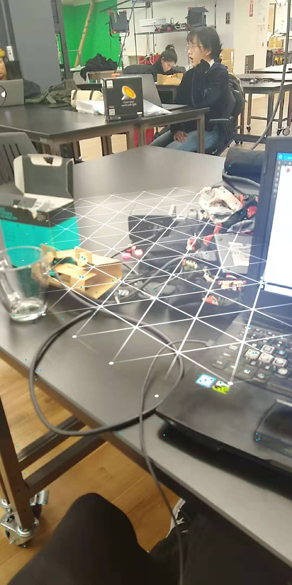

For the first week, I wanted to explore different types of AR, just to get a refresher on what kind of tools are available for someone like me. I took a look at a few things: Vuforia in Unity, ARCore development for Android with Unity and Google Poly, and Madmapper (because projection mapping has always looked so cool).
I grabbed a projector from the ER and set it up in a phone booth, then tried to get Madmapper working for a few hours. I might be an idiot, but NOWHERE did ANYONE say that for it to work correctly I had to "extend screens" on Windows, so I wasted a lot of time trying to figure that one out. In the end I was able to throw some quads up and manipulate them, so I think there's some potential in the future to play around with that.
Vuforia was a little easier to get going since we'd worked with it in the animation comm lab, though it was still a bit of a pain due to Unity versioning. I was wondering what to do when I realized the floral pattern shirts I'm always wearing would serve as amazing image trackers, so I thought about doing a pun on the phrase "having your heart on your sleeve". Instead of my sleeve I put a little heart over top of my real heart, since Valentine's day is coming up and all. I wanted a little something more, so I grabbed a free model of the alien from Alien from Turbsoquid and positioned it over my stomach, so it looked like the alien was coming out like in the movie. I had way, way more fun than I should have trying to get the alien back in and make the heart show up.
Poly and ARCore were a little difficult to get running, if only because I'd never developed on Android before. In the end it... sort of worked. I hooked up my Android phone to my computer and ran the sample scene, and though it seemed to find a surface it never put out any models or animations. At first I thought this was because my Google Poly API key was wrong, but that didn't seem to be the case. This'll require some troubleshooting from classmates who've developed on Android, I think.
Sometimes, in a weird way, it's not our favorite things that stick out to us, but the things that just happened to catch our attention in the right place at the right time. I don't know if this is my "favorite" AR experience, but whenever I think of AR I always think of this installation I saw in the Mori Art Museum in Tokyo.
It was part of an exhibition focused on "future technology". At the beginning of the exhibition you could download an app, and semi-hidden throughout the space were these drawings of Tanuki that you could scan with the app. They would do little animations in AR through the phone and then ask you questions, kind of like a buzzfeed quiz, questions like "do you come from the mountain or the ocean?" and "is the cosmos near or far?" If you found all of them, you'd get a little message like "you're the spirit of the octopus" or another animal depending on how you answered the questions. I really loved this because it was so much different than a work where you walked up to it, watched it, thought about it and left. The Tanuki enhanced the exhibition space and the works within without distracting from them, which is what I really admired. It was literally augmenting my world in a way that didn't seem intrusive or invasive like so much of modern tech, which is something I really want to replicate through my work with AR.
Comments? Questions? Concerns? Email me here!